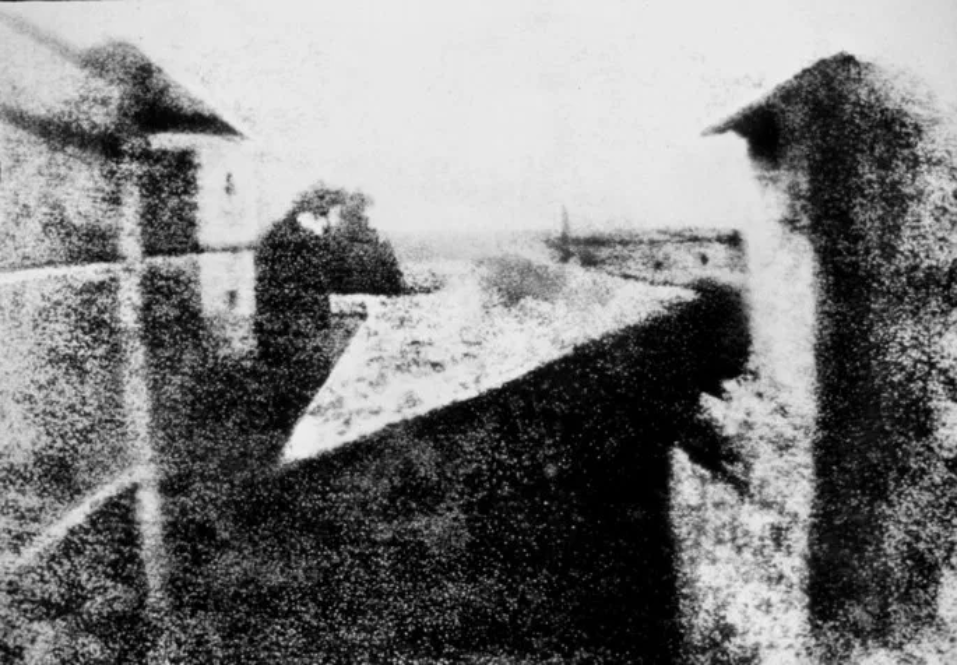

A fotografia como mídia ainda é relativamente recente, possuindo cerca de 200 anos de história. Neste breve tempo ante sua evolução, existiam processos brutos e químicos cáusticos e câmaras complexas para um meio simples. A grandiosa história da fotografia tem participação ativa de vários estudiosos no mundo todo.
A fotografia então é definida como uma técnica de registrar imagens por meio de uma luz incidente sobre um cenário ou superfície fotossensível. O termo possui origem do grego phos, ou photo que se refere à “luz” e graphein, que significa “marcar”, “desenhar”, ou “registrar”.
Os primeiros registros de buscar registrar momentos, remontam a história da camera obscura (em latim) guiados, pelos registros de Ibn Al-Haytham, ou Alhazen, que estudou as câmaras escuras, não para formar imagens, mas para entender o seu funcionamento, apesar de alguns registros chineses apontarem que também já haviam verificado algo a respeito. Câmara escura é um dispositivo de caixa com um orifício que permite uma certa quantidade de luz entre, sendo refletida por um objeto externo. Essa luz, quando refletida, forma uma imagem inversa dentro da câmara.

A Primeira Fotografia - 1826, Joseph Nicéphore NiépceO conceito da fotografia como conhecemos hoje não começou nesta fase e sim a partir do século XVI. No ano de 1826, Joseph Nicéphore Niépce capturou a considerada a primeira fotografia da história que tem registro de permanência. Denominada de “Vista da Janela de Le Gras”, com uma placa de betume de Judéia e estanho.
Seguidamente, diversos inventores, baseado na ideia já existente do ocorrido de Niépce, diversificaram com novos meios aprimorando a técnica. Louis Daguerre, com seu daguerreótipo, William Henry Fox Talbot com seu calótipo popularizaram a fotografia permitindo a criação de imagens em placas de cobre e papel.
No ano de 1888, George Eastman fez história com a invenção da câmera Kodak ampliando o acesso à fotografia, onde qualquer pessoa poderia fotografar e registrar momentos e experiências.
Após isso, surgiram os rolos de fotografia e no século XX, a fotografia colorida. Ainda assim, houve outra revolução, das câmeras digitais, que aí, sim, explodiram na popularidade, na década de 1990, tendo como características emissão instantânea e alta qualidade de imagem.
Com o advento da internet, a fotografia passou a ser mais popular, sendo presente principalmente em redes sociais. Existem diversos formatos de fotografia. Conceitualmente, existem diversos gêneros de fotografia, sendo:
Como é possível observar, a história da fotografia é relativamente antiga, não obstante, se desenvolveu recentemente e desempenha um papel importantíssimo no desenvolvimento e continuidade da história. Precursora de novos meios de expressão e leitura, ela mantém ativa o que hoje conhecemos como a maior rede de popularização e propagação de informação e interações por meios digitais, chamada de redes sociais. Foi a partir do suporte a imagens de grande volume, que as redes sociais puderam se tornar hoje as principais propagadoras de expressões fotográficas.